¿Por qué Escherichia coli es la pick me de las bacterias y Pseudomonas aeruginosa es superior?
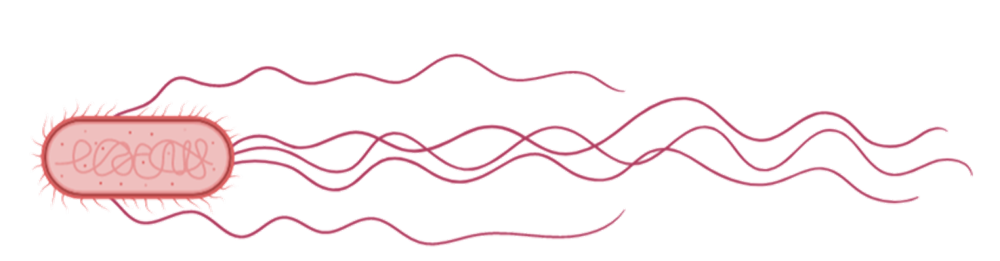
¿ERES UN SIM?
ESCANEANDO SIMS
Sims detectados: 0
CONFIRMADO: TODOS SON SIMS
No se detectó ninguna cámara. Claramente esto lo diría un NPC.
La hipótesis de la simulación
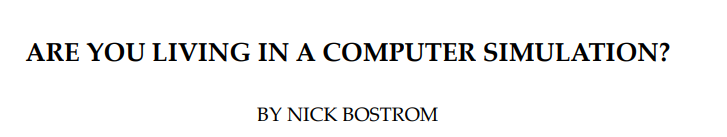
Plantea civilizaciones futuras lleguen a tener suficiente capacidad tecnológica para simular mentes y sociedades
⇩
Esas Civilizaciones pudieran crear muchísimas simulaciones creando otras simulaciones, podría haber muchos más observadores simulados que observadores biológicos originales
UNA REALIDAD, MILLONES DE PARTIDAS
LAORIGINALsolo hay una
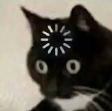
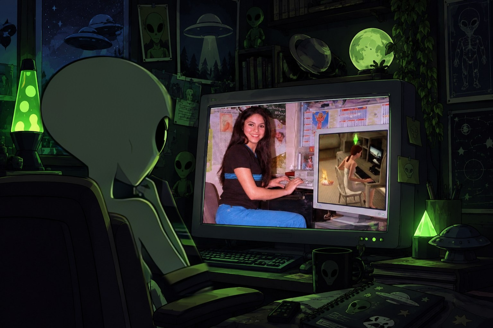
VIVIMOS EN UNA
Y tengo pruebas
Cargando realidad…
GLITCHES
Cuando la realidad falla como un juego
SE PRODUJO UN ERROR
La simulación detectó fallos en tu realidad. ¿Quieres reportarlos al jugador?
Error: escena duplicada
ESCENA CARGADA DOS VECES
La misma playlist maluca
Modelo de personaje duplicado
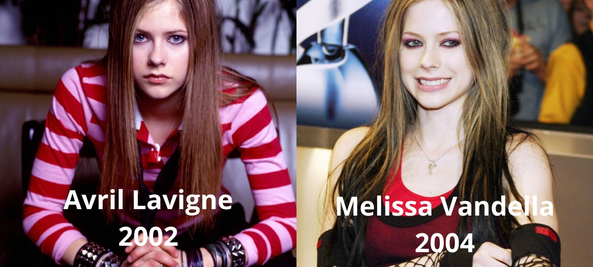
CLONES
Tarea cancelada sin motivo
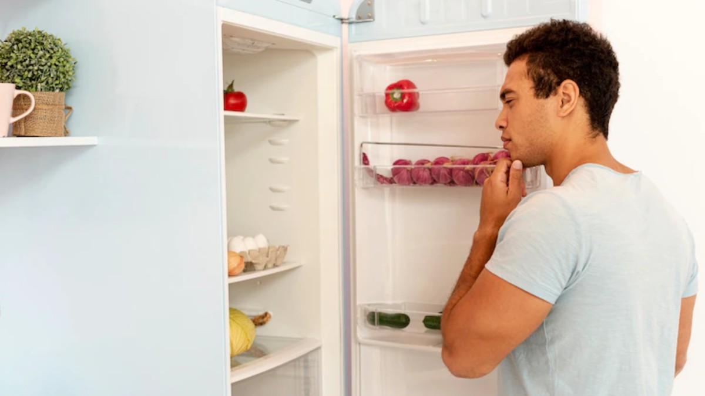
ERROR DE CONTINUIDAD
Preparar huevos con tostadas
Efecto Mandela
ALGUIEN ACTUALIZÓ EL SERVIDOR
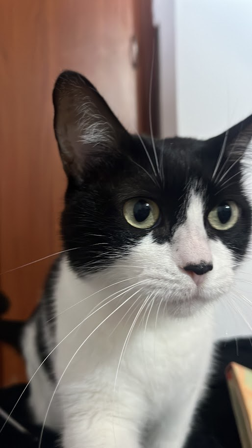
Código visible para algunos personajes
LOS GATOS VEN EL CÓDIGO
¿Qué está mirando?
otros personajes que pueden ver el código:
Personas drogadas
Pacientes psiquiatricos con delirio magico mistico
🍄🌈👁️🦋🌀✨
¿?
SI SOMOS SIMS, ¿DÓNDE ESTÁN LOS TRUCOS?
Si hay juego, hay trucos
Ctrl+Shift+C
Prueba: motherlode
EN EL JUEGO →+50.000 simoleones
EN LA VIDA REALLAVAR PLATANo todos tienen acceso a la consola :(
Envejecer: APAGADO
EN EL JUEGO →Nunca cumples años
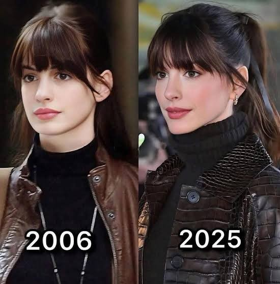
EN LA VIDA REALTU TÍA DE 39Lleva quince años así
EN EL JUEGO →Todas las barras al 100 %
HambreEnergíaDiversiónSocialHigieneVejiga
EN LA VIDA REALPSILOCIBINAAA <3Efecto: 3 horas
EN EL JUEGO →El NPC que se quedó pensando
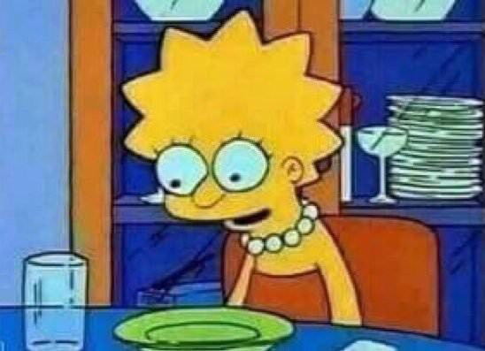
EN LA VIDA REALMALVIAJEBug: Entre mas quieres que se vaya mas dura
NPC
Personaje no jugable
Está en la partida, pero nadie lo controla: repite su ruta, su horario y su frase.
Abundan en el Caracolí y en Cuarta etapa
Buenos días.
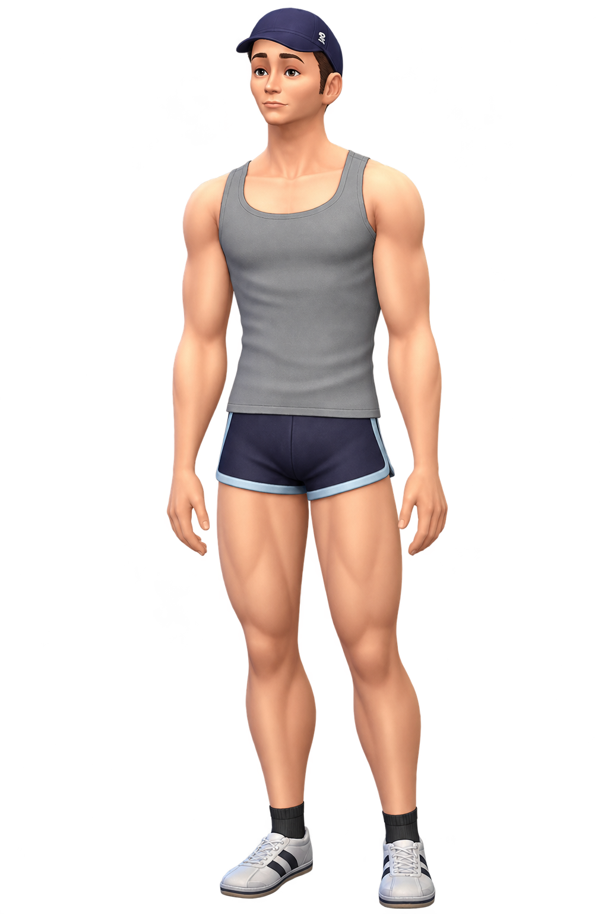
Packs de objetosKitsOfertas
Tus fondos: § 12
Pack de objetos y expansiones
EXPANSIÓNVida en pareja
REQUIERE 2 JUGADORES
Incluye cachos
EXPANSIÓNMascotas
INCLUYE PELOS
Pelos gratis en toda tu ropa negra.
EXPANSIÓN¡De vacaciones!
AGOTADO
Disponible en Semana Santa, al triple de precio.
Marionetas
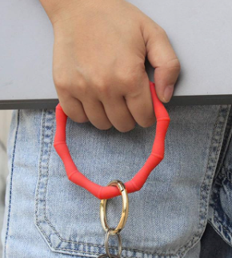
llavero feo
Hidrante
Fondos insuficientes
ACTUALIZACIONES QUE NADIE PIDIÓ
Notas del parche: la vida 30.0
NUEVOTe da felicidad estrenar un electrodoméstico
CAMBIOSalir un viernes requiere planificación logística
ELIMINADOLa capacidad de comer cualquier cosa sin consecuencias.
ERROR CONOCIDOAbres la aplicación del banco y cierras la aplicación del banco :(
PRÓXIMAMENTEExpansión: «Declaración de renta: el jefe final»
Instalando actualización 30.0… 0 % · no apagues tu cuerpo